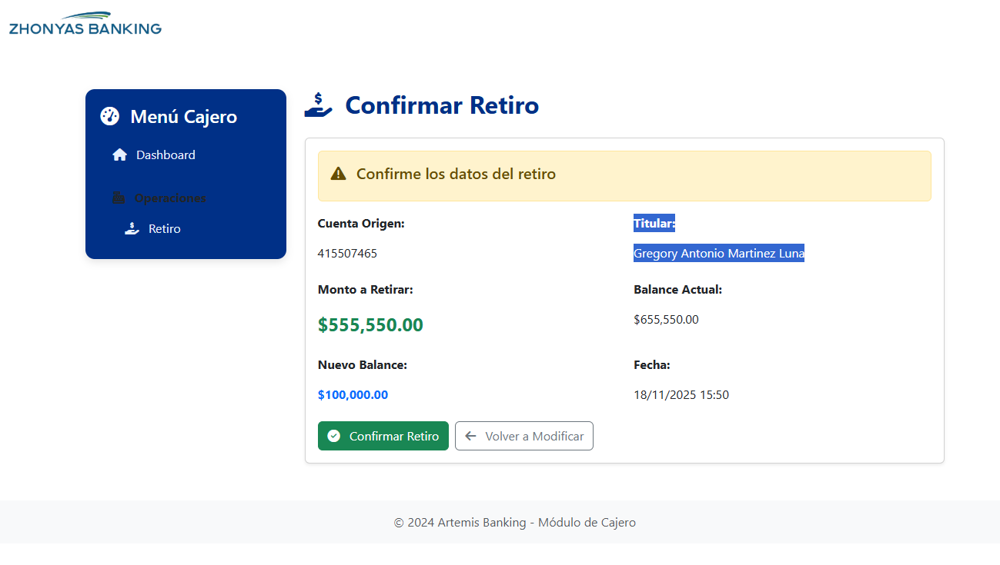
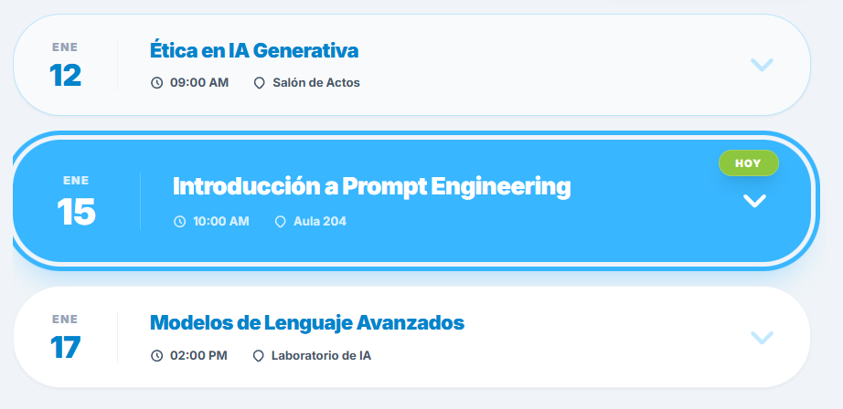

Mis Proyectos:
Zhonyas Banking:
Zhonyas Banking es un proyecto de Internet Banking desarrollado en C# utilizando el patrón MVC, enfocado en simular el funcionamiento de un sistema bancario en línea. La aplicación permite a los usuarios registrarse e iniciar sesión, gestionar su información y realizar operaciones básicas como consulta de balance, transferencias, registro de movimientos y administración de cuentas. El sistema está estructurado siguiendo el modelo Modelo-Vista-Controlador (MVC), lo que facilita la organización del código, la escalabilidad y el mantenimiento del proyecto. Este proyecto fue desarrollado con fines educativos, con el objetivo de fortalecer mis conocimientos en C#, arquitectura MVC, lógica de negocio y desarrollo de aplicaciones web.
Real state app:
Real State App es una aplicación web de bienes raíces desarrollada en C# utilizando el patrón MVC (Modelo-Vista-Controlador), orientada a simular el funcionamiento de una plataforma inmobiliaria. La aplicación permite a los usuarios visualizar propiedades disponibles, acceder a detalles como precio, ubicación, descripción e imágenes, y realizar solicitudes de contacto. Además, incluye un módulo de administración para registrar, editar y eliminar propiedades, facilitando la gestión de inmuebles.

Plataforma educativa:
Esta plataforma Educativa es una aplicación web desarrollada en React, orientada a la creación de un entorno digital para el apoyo al aprendizaje. La plataforma cuenta con diferentes módulos como estudiante, administrador y gestión de convocatorias, permitiendo organizar el contenido, registrar usuarios y administrar procesos académicos. Su objetivo es ofrecer una interfaz moderna, interactiva y fácil de usar.
